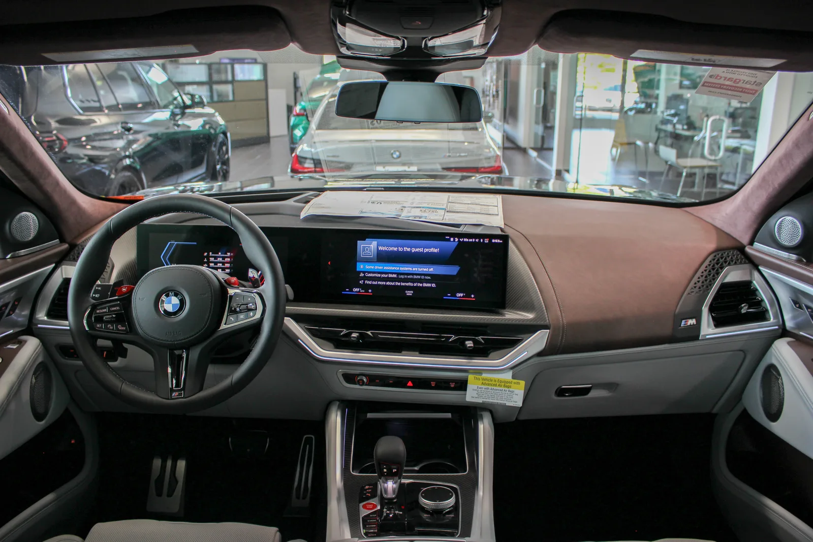
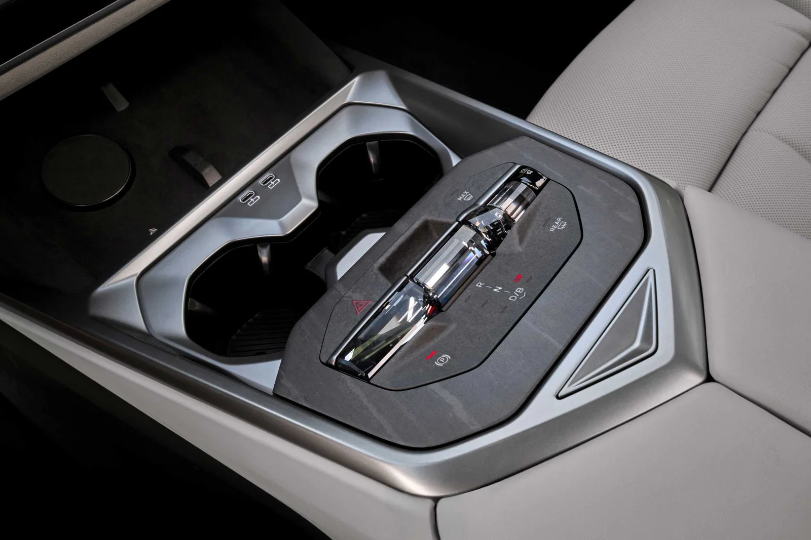

▲ 시동을 켜자 중앙 디스플레이에 영화 배너가 떴다 ⓒ Wikimedia Commons
시동을 켰습니다.
스파이더맨이 떴습니다.
누군가는 재미있다고 했고, 누군가는 "다시는 BMW를 사지 않겠다"고 했습니다. 같은 화면을 두고 반응이 갈린 이유가 있습니다.
1. 무슨 일이 있었나
| 항목 | 내용 |
|---|---|
| 기간 | 7월 27일 ~ 8월 10일 |
| 대상 국가 | 약 70개국 (국내 포함) |
| 대상 차량 | 2020년 7월 이후 생산 |
| 대상 OS | BMW OS 7 · 8 · 8.5 · 9 또는 OS X |
| 순서 | 내용 |
|---|---|
| 1 | 시동을 켜면 "스파이더맨이 당신의 BMW에 나타났다" 배너 표시 |
| 2 | 배너를 누르면 중앙 디스플레이에 애니메이션 재생 |
| 3 | 배경음악과 함께 실내 무드등 색상이 화면에 맞춰 변화 |
📍 중요한 구분 — 강제 재생은 아니었습니다
애니메이션이 저절로 틀어진 것이 아니라, 배너가 뜨고 그것을 눌렀을 때 재생되는 방식이었습니다. 다만 배너 자체는 시동을 켤 때마다 떴습니다. 논란의 초점도 애니메이션이 아니라 '묻지 않고 뜬 배너'에 있습니다.
2. 왜 화가 났나 — 2023년의 약속
이 일이 단순한 이벤트로 끝나지 않은 이유가 있습니다.
2023년, 스테판 두라흐 BMW 커넥티드카 개발 총괄 부사장은 이렇게 말했습니다. 차량 실내는 "사적인 공간"이며, 디스플레이 광고를 판매할 계획이 없다는 것이었습니다.
📍 왜 그 발언이 나왔었나
당시 업계 전반에서 차량 화면을 광고 지면으로 쓰려는 움직임이 감지되고 있었습니다. 커넥티드카가 늘면서 차 안 화면이 스마트폰처럼 수익원이 될 수 있다는 계산이 나왔기 때문입니다.
BMW의 당시 발언은 그 흐름에 선을 긋는 선언으로 받아들여졌습니다. 이번 일이 약속 파기로 읽힌 배경입니다.
와이콤비네이터 공동창업자 폴 그레이엄은 관련 영상을 공유하며 "이제 BMW는 절대 사지 않겠다"고 적었습니다. BMW 온라인 커뮤니티에도 "정말 실망스럽다", "절대 받아들일 수 없다"는 반응이 이어졌습니다.

▲ 2023년 BMW는 차량 실내를 "사적 공간"이라 규정했다 ⓒ Wikimedia Commons
3. BMW의 해명 — "광고가 아니다"
BMW의 입장은 이렇습니다.
이것은 광고가 아니라 특정 기념일이나 행사에 맞춰 제공하는 테마 애니메이션 기능이라는 것입니다.
| 구분 | 내용 |
|---|---|
| BMW | 기념일·행사용 테마 애니메이션 기능 |
| 비판 측 | 특정 상업 영화를 알리는 광고 |
✅ 무엇이 광고를 광고로 만드는가
· 대상이 특정 상품인가 — 이번 건은 개봉 예정 영화였습니다
· 시점이 상품 출시와 맞물리는가 — 개봉 시점에 맞춰 진행됐습니다
· 이용자가 원해서 켰는가 — 배너는 묻지 않고 떴습니다
· 다만 금전 거래 여부는 공개되지 않았습니다 — 협업인지 유상 광고인지 불명확합니다
마지막 항목이 이 논쟁이 끝나지 않는 이유입니다. 돈을 받고 지면을 팔았다면 명백한 광고입니다. 브랜드 간 협업이라면 콘텐츠에 가깝습니다. 그 구분이 공개되지 않았습니다.
4. 국내와 해외가 갈렸습니다
| 구분 | 주된 반응 |
|---|---|
| 해외 | 부정적 — "실망", "수용 불가", 구매 거부 선언 |
| 국내 | 호의적 — "신기하다", 스크린샷·영상 공유 |
국내의 한 차주는 "어리둥절했지만 재미있게 봤다"고 말했습니다. 커뮤니티에는 불만보다 인증 게시물이 더 많았습니다.
📍 왜 이렇게 갈렸을까
기대치의 차이로 보입니다. 해외, 특히 미국·유럽 이용자들은 스마트TV와 스마트폰에서 광고에 시달린 경험이 축적돼 있습니다. 차 화면에 배너가 뜬 것을 같은 흐름의 시작으로 읽은 것입니다.
반면 국내에서는 이런 형태가 처음 겪는 일에 가까웠습니다. 아직 패턴이 아니라 이벤트로 보였다는 뜻입니다.

▲ 화면이 커질수록 그 공간을 무엇으로 채울지가 문제가 된다 ⓒ Wikimedia Commons
5. 진짜 쟁점 — 그 화면은 누구 것인가
캠페인은 8월 10일에 끝났습니다. 그런데 논의가 이어지는 이유는 따로 있습니다.
| 조건 | 의미 |
|---|---|
| 대형 중앙 디스플레이 | 보여줄 지면이 생겼다 |
| 상시 연결(커넥티드) | 제조사가 언제든 내려보낼 수 있다 |
| OTA 업데이트 | 차를 산 뒤에도 내용이 바뀐다 |
| 무드등 연동 | 화면을 넘어 실내 전체로 확장된다 |
네 조건은 앞으로 더 강해집니다. SDV(소프트웨어 정의 차량)로 갈수록 출고 후에 기능과 화면이 바뀌는 것이 기본이 되기 때문입니다.
✅ 소비자가 확인해둘 것
· 차량 내 마케팅 수신 동의가 커넥티드 서비스 약관에 포함돼 있는지
· 거부(옵트아웃) 설정이 제공되는지 — 이번 건은 별도 안내가 없었습니다
· OTA 업데이트 항목에 기능 외 콘텐츠가 섞이는지
· 실내 무드등·사운드까지 연동 제어되는 범위
두 번째 항목이 핵심입니다. 광고냐 아니냐보다, 끄고 싶을 때 끌 수 있느냐가 실질적인 문제입니다. TV와 스마트폰에서 반복돼 온 논쟁이 차 안으로 옮겨온 것입니다.
차량 인터페이스를 둘러싼 흐름은 터치스크린에서 물리 버튼으로 돌아가는 흐름에서도 다룬 바 있습니다.

▲ 관건은 광고냐 아니냐보다 '끌 수 있느냐'다 ⓒ BMW
6. 브랜드가 치른 값
2주짜리 캠페인이었습니다.
그런데 남은 것은 2023년 발언과의 모순이었습니다. 브랜드가 스스로 세운 원칙을 되돌리면, 그 원칙을 믿었던 고객이 가장 크게 반응합니다. 폴 그레이엄의 반응이 그 예입니다.
📍 프리미엄 브랜드에서 더 크게 작용하는 이유
고가 브랜드가 파는 것에는 '방해받지 않을 권리'가 포함돼 있습니다. 정숙성에 돈을 쓰고, 실내 마감에 돈을 쓰는 이유도 결국 그것입니다.
화면에 배너가 뜨는 순간, 그 값을 지불한 이유 하나가 흔들립니다. 대중 브랜드보다 프리미엄 브랜드에서 반발이 큰 구조적 이유입니다.

▲ 프리미엄 브랜드가 파는 것에는 방해받지 않을 권리가 포함된다 ⓒ Wikimedia Commons
7. 정리
BMW가 7월 27일부터 8월 10일까지 약 70개국에서 차량 디스플레이에 스파이더맨 콘텐츠를 띄웠습니다. 2020년 7월 이후 생산되고 OS 7·8·8.5·9 또는 OS X를 탑재한 차량이 대상이었고, 시동 시 배너가 뜬 뒤 누르면 애니메이션과 무드등 연동까지 이어졌습니다.
논란의 핵심은 2023년 발언이었습니다. BMW는 당시 차량 실내를 "사적 공간"이라며 디스플레이 광고 계획을 부인했습니다. 회사는 이번 건이 "광고가 아니라 테마 애니메이션 기능"이라고 해명했습니다.
반응은 해외가 부정적, 국내가 호의적으로 갈렸습니다. 캠페인은 이미 끝났지만 질문은 남습니다. 커넥티드와 OTA가 기본이 될수록, 내 차 화면에 무엇이 뜰지를 누가 정하느냐는 문제가 반복될 수밖에 없습니다.